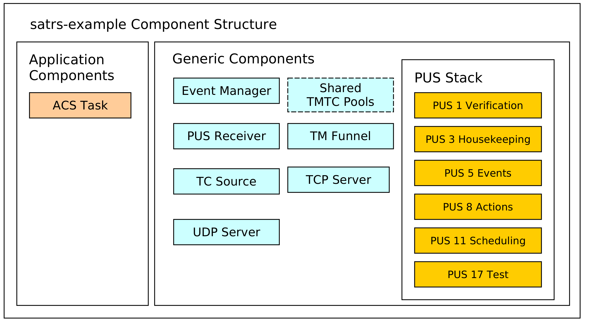
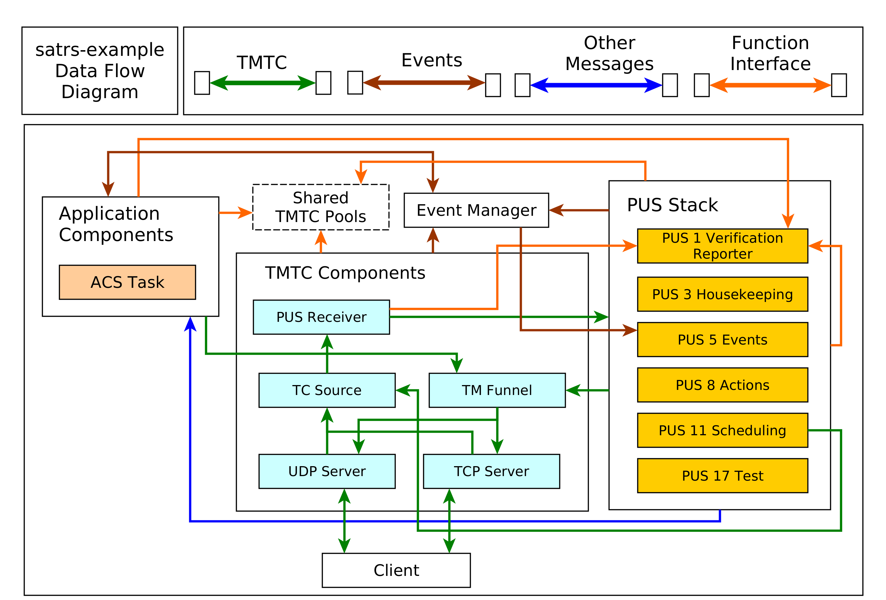

The sat-rs book
This book is the primary information resource for the sat-rs library in addition to the regular API documentation. It contains the following resources:
- Architecture informations and consideration which would exceeds the scope of the regular API.
- General information on how to build on-board Software and how
sat-rscan help to fulfill the unique requirements of writing software for remote systems.
Introduction
The primary goal of the sat-rs library is to provide re-usable components to write on-board software for remote systems like rovers or satellites. It is specifically written for the special requirements for these systems.
It should be noted that sat-rs is early-stage software. Important features are missing. New releases with breaking changes are released regularly, with all changes documented inside respective changelog files. You should only use this library if your are willing to work in this environment.
A lot of the architecture and general design considerations are based on the FSFW C++ framework which has flight heritage through the 2 missions FLP and EIVE.
Getting started with the example
The satrs-example
provides various practical usage examples of the sat-rs framework. If you are more interested in
the practical application of sat-rs inside an application, it is recommended to have a look at
the example application. The satrs-minisim
applicatin complements the example application and can be used to simulate some physical devices
for the satrs-example device handlers.
Flight Heritage
There is an active and continuous effort to get early flight heritage for the sat-rs library. Currently this library has the following flight heritage:
- Submission as an OPS-SAT experiment which has also flown on the satellite. The application is strongly based on the sat-rs example application. You can find the repository of the experiment here.
- Development and use of a sat-rs-based demonstration on-board software alongside a Flight System Simulator in the context of a Bachelors Thesis at Airbus Netherlands.
Library Design
Satellites and space systems in general are complex systems with a wide range of requirements for both the hardware and the software. Consequently, the general design of the library is centered around many light-weight components which try to impose as few restrictions as possible on how to solve certain problems. This is also the reason why sat-rs is explicitely called a library instead of a framework.
There are still a lot of common patterns and architectures across these systems where guidance of how to solve a problem and a common structure would still be extremely useful to avoid pitfalls which were already solved and to avoid boilerplate code. This library tries to provide this structure and guidance the following way:
- Providing this book which explains the architecture and design patterns in respect to common issues and requirements of space systems.
- Providing an example application. Space systems still commonly have large monolithic primary On-Board Softwares, so the choice was made to provide one example software which contains the various features provided by sat-rs.
- Providing a good test suite. This includes both unittests and integration tests. The integration
tests can also serve as smaller usage examples than the large
satrs-exampleapplication.
This library has special support for standards used in the space industry. This especially includes standards provided by Consultative Committee for Space Data Systems (CCSDS) and European Cooperation for Space Standardization (ECSS). It does not enforce using any of those standards, but it is always recommended to use some sort of standard for interoperability.
A lot of the modules and design considerations are based on the Flight Software Framework (FSFW).
The FSFW has its own documentation, which
will be referred to when applicable. The FSFW was developed over a period of 10 years for the
Flying Laptop Project by the University of Stuttgart with Airbus Defence and Space GmbH.
It has flight heritage through the 2 mssions FLP
and EIVE.
Therefore, a lot of the design concepts were ported more or less unchanged to the sat-rs
library.
FLP is a medium-size small satellite with a higher budget and longer development time than EIVE,
which allowed to build a highly reliable system while EIVE is a smaller 6U+ cubesat which had a
shorter development cycle and was built using cheaper COTS components. This library also tries
to accumulate the knowledge of developing the OBSW and operating the satellite for both these
different systems and provide a solution for a wider range of small satellite systems.
sat-rs can be seen as a modern port of the FSFW which uses common principles of software
engineering to provide a reliable and robust basis for space On-Board Software. The choice
of using the Rust programming language was made for the following reasons:
- Rust has safety guarantees which are a perfect fit for space systems which generally have high robustness and reliablity guarantees.
- Rust is suitable for embedded systems. It can also be run on smaller embedded systems like the STM32 which have also become common in the space sector. All space systems are embedded systems, which makes using large languages like Python challenging even for OBCs with more performance.
- Rust has support for linking C APIs through its excellent FFI support. This is especially important because many vendor provided libaries are still C based.
- Modern tooling like a package managers and various development helper, which can further reduce
development cycles for space systems.
cargoprovides tools like auto-formatters and linters which can immediately ensure a high software quality throughout each development cycle. - A large ecosystem with excellent libraries which also leverages the excellent tooling provided previously. Integrating these libraries is a lot easier compared to languages like C/C++ where there is still no standardized way to use packages.
Communication with sat-rs based software
Communication is a vital topic for remote system which are usually not (directly) connected to the internet and only have 1-2 communication links during nominal operation. However, most of these systems have internet access during development cycle. There are various standards provided by CCSDS and ECSS which can be useful to determine how to communicate with the satellite and the primary On-Board Software.
Application layer
Most communication with space systems is usually packet based. For example, the CCSDS space
packet standard only specifies a 6 byte header with at least 1 byte payload. The PUS packet
standard is a subset of the space packet standard, which adds some fields and a 16 bit CRC, but
it is still centered around small packets. sat-rs provides support for these ECSS and CCSDS
standards and also attempts to fill the gap to the internet protocol by providing the following
components.
- UDP TMTC Server. UDP is already packet based which makes it an excellent fit for exchanging space packets.
- TCP TMTC Server Components.
TCP is a stream based protocol, so the library provides building blocks to parse telemetry
from an arbitrary bytestream. Two concrete implementations are provided:
- TCP spacepackets server to parse tightly packed CCSDS Spacepackets.
- TCP COBS server to parse generic frames wrapped with the COBS protocol.
Working with telemetry and telecommands (TMTC)
The commands sent to a space system are commonly called telecommands (TC) while the data received from it are called telemetry (TM). Keeping in mind the previous section, the concept of a TC source and a TM sink can be applied to most satellites. The TM sink is the one entity where all generated telemetry arrives in real-time. The most important task of the TM sink usually is to send all arriving telemetry to the ground segment of a satellite mission immediately. Another important task might be to store all arriving telemetry persistently. This is especially important for space systems which do not have permanent contact like low-earth-orbit (LEO) satellites.
The most important task of a TC source is to deliver the telecommands to the correct recipients. For component oriented software using message passing, this usually includes staged demultiplexing components to determine where a command needs to be sent.
Using a generic concept of a TC source and a TM sink as part of the software design simplifies the flexibility of the TMTC infrastructure: Newly added TM generators and TC receiver only have to forward their generated or received packets to those handler objects.
Low-level protocols and the bridge to the communcation subsystem
Many satellite systems usually use the lower levels of the OSI layer in addition to the application
layer covered by the PUS standard or the CCSDS space packets standard. This oftentimes requires
special hardware like dedicated FPGAs to handle forward error correction fast enough. sat-rs
might provide components to handle standard like the Unified Space Data Link Standard (USLP) in
software but most of the time the handling of communication is performed through custom
software and hardware. Still, connecting this custom software and hardware to sat-rs can mostly
be done by using the concept of TC sources and TM sinks mentioned previously.
Working with Constrained Systems
Software for space systems oftentimes has different requirements than the software for host systems or servers. Currently, most space systems are considered embedded systems.
For these systems, the computation power and the available heap are the most important resources which are constrained. This might make completeley heap based memory management schemes which are oftentimes used on host and server based systems unfeasable. Still, completely forbidding heap allocations might make software development unnecessarilly difficult, especially in a time where the OBSW might be running on Linux based systems with hundreds of MBs of RAM.
A useful pattern used commonly in space systems is to limit heap allocations to program initialization time and avoid frequent run-time allocations. This prevents issues like running out of memory (something even Rust can not protect from) or heap fragmentation on systems without a MMU.
Using pre-allocated pool structures
A huge candidate for heap allocations is the TMTC and handling. TC, TMs and IPC data are all
candidates where the data size might vary greatly. The regular solution for host systems
might be to send around this data as a Vec<u8> until it is dropped. sat-rs provides
another solution to avoid run-time allocations by offering pre-allocated static
pools. These pools are split into subpools where each subpool can have different page sizes.
For example, a very small telecommand (TC) pool might look like this:

The core of the pool abstractions is the PoolProvider trait. This trait specifies the general API a pool structure should have without making assumption of how the data is stored.
This trait is implemented by a static memory pool implementation. The code to generate this static pool would look like this:
use satrs::pool::{StaticMemoryPool, StaticPoolConfig};
let tc_pool = StaticMemoryPool::new(StaticPoolConfig::new(vec![
(6, 16),
(4, 32),
(2, 64),
(1, 128)
]));
It should be noted that the buckets only show the maximum size of data being stored inside them. The store will keep a separate structure to track the actual size of the data being stored. A TC entry inside this pool has a store address which can then be sent around without having to dynamically allocate memory. The same principle can also be applied to the telemetry (TM) and inter-process communication (IPC) data.
You can read
for more details.
In the future, optimized pool structures which use standard containers or are
Sync by default might be added as well.
Using special crates to prevent smaller allocations
Another common way to use the heap on host systems is using containers like String and Vec<u8>
to work with data where the size is not known beforehand. The most common solution for embedded
systems is to determine the maximum expected size and then use a pre-allocated u8 buffer and a
size variable. Alternatively, you can use the following crates for more convenience or a smart
behaviour which at the very least reduces heap allocations:
smallvec.arrayvecwhich also contains anArrayStringhelper type.tinyvec.
Using a fixed amount of threads
On host systems, it is a common practice to dynamically spawn new threads to handle workloads. On space systems this is generally considered an anti-pattern as this is considered undeterministic and might lead to similar issues like when dynamically using the heap. For example, spawning a new thread might use up the remaining heap of a system, leading to undeterministic errors.
The most common way to avoid this is to simply spawn all required threads at program initialization
time. If a thread is done with its task, it can go back to sleeping regularly, only occasionally
checking for new jobs. If a system still needs to handle bursty concurrent loads, another possible
way commonly used for host systems as well would be to use a threadpool, for example by using the
threadpool crate.
Working with Actions
Space systems generally need to be commanded regularly. This can include commands periodically required to ensure a healthy system, or commands to reach the mission goals.
These commands can be modelled using the concept of Actions. the ECSS PUS standard also provides the PUS service 8 for actions, but provides few concrete subservices and specification on how action commanding could look like.
sat-rs proposes two recommended ways to perform action commanding:
- Target ID and Action ID based. The target ID is a 32-bit unsigned ID for an OBSW object entity which can also accept Actions. The action ID is a 32-bit unsigned ID for each action that a target is able to perform.
- Target ID and Action String based. The target ID is the same as in the first proposal, but the unique action is identified by a string.
The library provides an ActionRequest abstraction to model both of these cases.
Commanding with ECSS PUS 8
sat-rs provides a generic ECSS PUS 8 action command handler. This handler can convert PUS 8
telecommands which use the commanding scheme 1 explained above to an ActionRequest which is
then forwarded to the target specified by the Target ID.
There are 3 requirements for the PUS 8 telecommand:
- The subservice 128 must be used
- Bytes 0 to 4 of application data must contain the target ID in
u32big endian format. - Bytes 4 to 8 of application data must contain the action ID in
u32big endian format. - The rest of the application data are assumed to be command specific additional parameters. They
will be added to an IPC store and the corresponding store address will be sent as part of the
ActionRequest.
Sending back telemetry
There are some cases where the regular verification provided by PUS in response to PUS action commands is not sufficient and some additional telemetry needs to be sent to ground. In that case, it is recommended to chose some custom subservice for action TM data and then send the telemetry using the same scheme as shown above, where the first 8 bytes of the application data is reserved for the target ID and action ID.
Modes
Modes are an extremely useful concept to model complex systems. They allow simplified system reasoning for both system operators and OBSW developers. They also provide a way to alter the behaviour of a component and also provide observability of a system. A few examples of how to model the mode of different components within a space system with modes will be given.
Pyhsical device component with modes
The following simple mode scheme with the following three mode
OFFONNORMAL
can be applied to a large number of simpler device controllers of a remote system, for example sensors.
OFFmeans that a device is physically switched off, and the corresponding software component does not poll the device regularly.ONmeans that a device is pyhsically switched on, but the device is not polled perically.NORMALmeans that a device is powered on and polled periodically.
If a devices is OFF, the device handler will deny commands which include physical communication
with the connected devices. In NORMAL mode, it will autonomously perform periodic polling
of a connected physical device in addition to handling remote commands by the operator.
Using these three basic modes, there are two important transitions which need to be taken care of
for the majority of devices:
OFFtoONorNORMAL: The device first needs to be powered on. After that, the device initial startup configuration must be performed.NORMALorONtoOFF: Any important shutdown configuration or handling must be performed before powering off the device.
Controller components with modes
Controller components are not modelling physical devices, but a mode scheme is still the best way to model most of these components.
For example, a hypothetical attitude controller might have the following modes:
SAFETARGET IDLETARGET POINTING GROUNDTARGET POINTING NADIR
We can also introduce the concept of submodes: The SAFE mode can for example have a
DEFAULT submode and a DETUMBLE submode.
Achieving system observability with modes
If a system component has a mode in some shape or form, this mode should be observable. This means that the operator can also retrieve the mode for a particular component. This is especially important if these components can change their mode autonomously.
If a component is able to change its mode autonomously, this is also something which is relevant information for the operator or for other software components. This means that a component should also be able to announce its mode.
This concept becomes especially important when applying the mode concept on the whole system level. This will also be explained in detail in a dedicated chapter, but the basic idea is to model the whole system as a tree where each node has a mode. A new capability is added now: A component can announce its mode recursively. This means that the component will announce its own mode first before announcing the mode of all its children. Using a scheme like this, the mode of the whole system can be retrieved using only one command. The same concept can also be used for commanding the whole system, which will be explained in more detail in the dedicated systems modelling chapter.
In summary, a component which has modes has to expose the following 4 capabilities:
- Set a mode
- Read the mode
- Announce the mode
- Announce the mode recursively
Using ECSS PUS to perform mode commanding
Health
Health is an important concept for systems and components which might fail. Oftentimes, the health is tied to the mode of a system component in some shape or form, and determines whether a system component is usable. Health is also an extremely useful concept to simplify the Fault Detection, Isolation and Recovery (FDIR) concept of a system.
The following health states are based on the ones used inside the FSFW and are enough to model most use-cases:
HEALTHYFAULTYNEEDS RECOVERYEXTERNAL CONTROL
HEALTHYmeans that a component is working nominally, and can perform its task without any issues.FAULTYmeans that a component does not work properly. This might also impact other system components, so the passivation and isolation of that component is desirable for FDIR purposes.NEEDS RECOVERYis used to attempt a recovery of a component. For example, a simple sensor could be power-cycled if there were multiple communication issues in the last time.EXTERNAL CONTROLis used to isolate an individual component from the rest of the system. For example, on operator might be interested in testing a component in isolation, and the interference of the system is not desired. In that case, theEXTERNAL CONTROLhealth state might be used to prevent mode commands from the system while allowing external mode commands.
Housekeeping Data
Remote systems like satellites and rovers oftentimes generate data autonomously and periodically. The most common example for this is temperature or attitude data. Data like this is commonly referred to as housekeeping data, and is usually one of the most important and most resource heavy data sources received from a satellite. Standards like the PUS Service 3 make recommendation how to expose housekeeping data, but the applicability of the interface offered by PUS 3 has proven to be partially difficult and clunky for modular systems.
First, we are going to list some assumption and requirements about Housekeeping (HK) data:
- HK data is generated periodically by various system components throughout the systems.
- An autonomous and periodic sampling of that HK data to be stored and sent to Ground is generally required. A minimum interface consists of requesting a one-shot sample of HK, enabling and disabling the periodic autonomous generation of samples and modifying the collection interval of the periodic autonomous generation.
- HK data often needs to be shared to other software components. For example, a thermal controller wants to read the data samples of all sensor components.
A commonly required way to model HK data in a clean way is also to group related HK data into sets, which can then dumped via a similar interface.
TODO: Write down sat-rs recommendations how to expose and work with HK data.
Events
Events are an important mechanism used for remote systems to monitor unexpected or expected anomalies and events occuring on these systems.
One common use case for events on remote systems is to offer a light-weight publish-subscribe mechanism and IPC mechanism for software and hardware events which are also packaged as telemetry (TM) or can trigger a system response. They can also be tied to Fault Detection, Isolation and Recovery (FDIR) operations, which need to happen autonomously.
The PUS Service 5 standardizes how the ground interface for events might look like, but does not specify how other software components might react to those events. There is the PUS Service 19, which might be used for that purpose, but the event components recommended by this framework do not rely on the present of this service.
The following images shows how the flow of events could look like in a system where components can generate events, and where other system components might be interested in those events:
For the concrete implementation of your own event management and/or event routing system, you can have a look at the event management documentation inside the API documentation where you can also find references to all examples.
sat-rs Example Application
The sat-rs library includes a monolithic example application which can be found inside
the satrs-example
subdirectory of the repository. The primary purpose of this example application is to show how
the various components of the sat-rs framework could be used as part of a larger on-board
software application.
Structure of the example project
The example project contains components which could also be expected to be part of a production On-Board Software. A structural diagram of the example application is given to provide a brief high-level view of the components used inside the example application:

The dotted lines are used to denote optional components. In this case, the static pool components are optional because the heap can be used as a simpler mechanism to store TMTC packets as well. Some additional explanation is provided for the various components.
TCP/IP server components
The example includes a UDP and TCP server to receive telecommands and poll telemetry from. This might be an optional component for an OBSW which is only used during the development phase on ground. The UDP server is strongly based on the UDP TC server. This server component is wrapped by a TMTC server which handles all telemetry to the last connected client.
The TCP server is based on the TCP Spacepacket Server class. It parses space packets by using the CCSDS space packet ID as the packet start delimiter. All available telemetry will be sent back to a client after having read all telecommands from the client.
TMTC Infrastructure
The most important components of the TMTC infrastructure include the following components:
- A TC source component which demultiplexes and routes telecommands based on parameters like packet APID or PUS service and subservice type.
- A TM sink sink component which is the target of all sent telemetry and sends it to downlink handlers like the UDP and TCP server.
You can read the Communications chapter for more background information on the chosen TMTC infrastructure approach.
PUS Service Components
A PUS service stack is provided which exposes some functionality conformant with the ECSS PUS services. This currently includes the following services:
- Service 1 for telecommand verification. The verification handling is handled locally: Each component which generates verification telemetry in some shape or form receives a reporter object which can be used to send PUS 1 verification telemetry to the TM funnel.
- Service 3 for housekeeping telemetry handling.
- Service 5 for management and downlink of on-board events.
- Service 8 for handling on-board actions.
- Service 11 for scheduling telecommands to be released at a specific time. This component uses the PUS scheduler class which performs the core logic of scheduling telecommands. All telecommands released by the scheduler are sent to the central TC source using a message.
- Service 17 for test purposes like pings.
Event Management Component
An event manager based on the sat-rs event manager component is provided to handle the event IPC and FDIR mechanism. The event message are converted to PUS 5 telemetry by the PUS event dispatcher.
You can read the events chapter for more in-depth information about event management.
Sample Application Components
These components are example mission specific. They provide an idea how mission specific modules would look like the sat-rs context. It currently includes the following components:
- An Attitute and Orbit Control (AOCS) example task which can also process some PUS commands.
Dataflow
The interaction of the various components is provided in the following diagram:

It should be noted that an arrow coming out of a component group refers to multiple components in that group. An explanation for important component groups will be given.
TMTC component group
This groups is the primary interface for clients to communicate with the on-board software using a standardized TMTC protocol. The example uses the ECSS PUS protocol. In the future, this might be extended with the CCSDS File Delivery Protocol.
A client can connect to the UDP or TCP server to send these PUS packets to the on-board software. These servers then forward the telecommads to a centralized TC source component using a dedicated message abstraction.
This TC source component then demultiplexes the message and forwards it to the relevant components. Right now, it forwards all PUS requests to the respective PUS service handlers using the PUS receiver component. The individual PUS services are running in a separate thread. In the future, additional forwarding to components like a CFDP handler might be added as well. It should be noted that PUS11 commands might contain other PUS commands which should be scheduled in the future. These wrapped commands are forwarded to the PUS11 handler. When the schedule releases those commands, it forwards the released commands to the TC source again. This allows the scheduler and the TC source to run in separate threads and keeps them cleanly separated.
All telemetry generated by the on-board software is sent to a centralized TM funnel. This component also performs a demultiplexing step to forward all telemetry to the relevant TM recipients. In the example case, this is the last UDP client, or a connected TCP client. In the future, forwarding to a persistent telemetry store and a simulated communication component might be added here as well. The centralized TM funnel also takes care of some packet processing steps which need to be applied for each ECSS PUS packet, for example CCSDS specific APID incrementation and PUS specific message counter incrementation.
Application Group
The application components generally do not receive raw PUS packets directly, even though
this is certainly possible. Instead, they receive internalized messages from the PUS service
handlers. For example, instead of receiving a PUS 8 Action Telecommand directly, an application
component will receive a special ActionRequest message type reduced to the basic important
information required to execute a request. These special requests are denoted by the blue arrow
in the diagram.
It should be noted that the arrow pointing towards the event manager points in both directions. This is because the application components might be interested in events generated by other components as well. This mechanism is oftentimes used to implement the FDIR functionality on system and component level.
Shared components and functional interfaces
It should be noted that sometimes, a functional interface is used instead of a message. This is used for the generation of verification telemetry. The verification reporter is a clonable component which generates and sends PUS1 verification telemetry directly to the TM funnel. This introduces a loose coupling to the PUS standard but was considered the easiest solution for a project which utilizes PUS as the main communication protocol. In the future, a generic verification abstraction might be introduced to completely decouple the application layer from PUS.
The same concept is applied if the backing store of TMTC packets are shared pools. Every component which needs to read telecommands inside that shared pool or generate new telemetry into that shared pool will received a clonable shared handle to that pool.
The same concept could be extended to power or thermal handling. For example, a shared power helper component might be used to retrieve power state information and send power switch commands through a functional interface. The actual implementation of the functional interface might still use shared memory and/or messages, but the functional interface makes using and testing the interaction with these components easier.